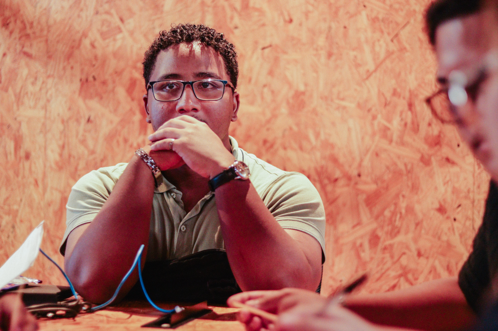
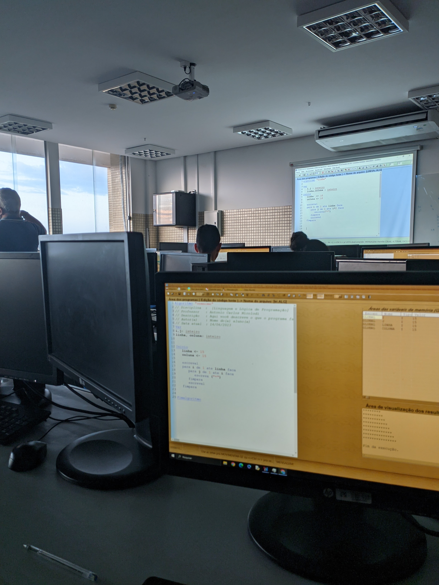

🧠 Sobre mim
Olá! Me chamo José Pires, tenho 20 anos e sou natural de São Luís, Maranhão. Desde criança, sempre fui fascinado por tecnologia — meu olhar brilhava ao imaginar os mistérios do universo e o funcionamento de aeronaves, paixões que ajudaram a moldar minha curiosidade e minha forma de ver o mundo.
No ensino médio, tive facilidade com diversas áreas, mas sempre tive um carinho especial pela física. Em 2023, dei início à minha jornada acadêmica na UFMA, no curso de Ciência e Tecnologia, com a intenção de seguir rumo à Engenharia Aeroespacial. No entanto, ao entender melhor o mercado brasileiro nessa área, decidi redirecionar meu foco para um campo que sempre me chamou atenção: a Engenharia da Computação. O ano de 2024 foi um período intenso de mudanças e aprendizados. Por razões pessoais e estratégicas, optei por trancar temporariamente a faculdade. Desde então, tenho me dedicado ao meu desenvolvimento pessoal e técnico, explorando com profundidade o universo do desenvolvimento front-end e da tecnologia em geral.
Sou movido por desafios, inovação e pela vontade constante de evoluir. Em breve, pretendo retomar minha graduação, agora com uma bagagem muito mais sólida e alinhada aos meus objetivos.
 